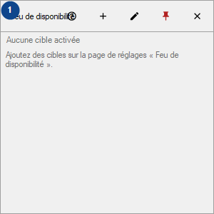
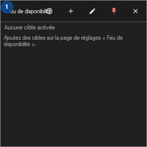

Feu de disponibilité
À quoi cela sert
Un tableau de tuiles pour vos hôtes, sites, dossiers et lecteurs ; les vérifications tournent tant que CyrFlip est actif et les résultats restent en mémoire.


Ordre des actions
Lisez les explications numérotées, choisissez les valeurs voulues, puis continuez avec la commande de la fenêtre.
Éléments
1. Feu de disponibilité
Choisissez ou saisissez la valeur indiquée par le libellé voisin. Vérifiez-la avant de continuer.
Vos raccourcis